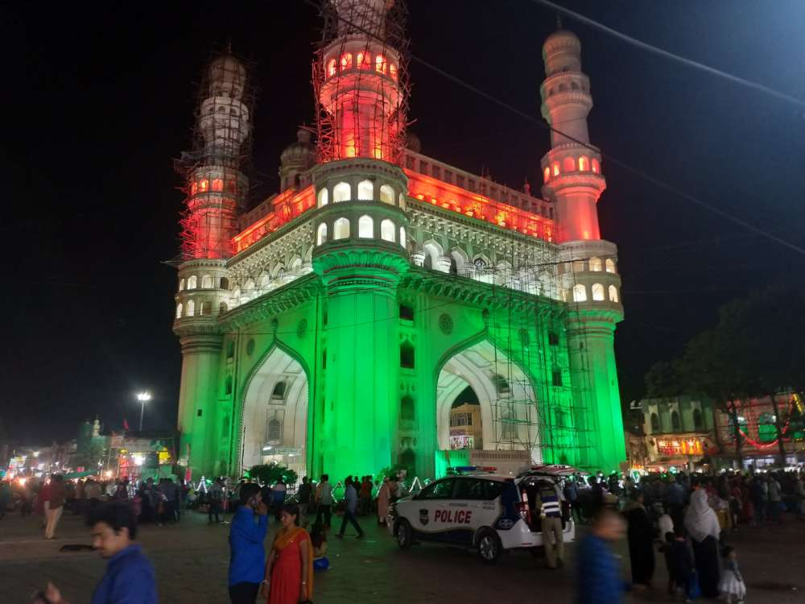
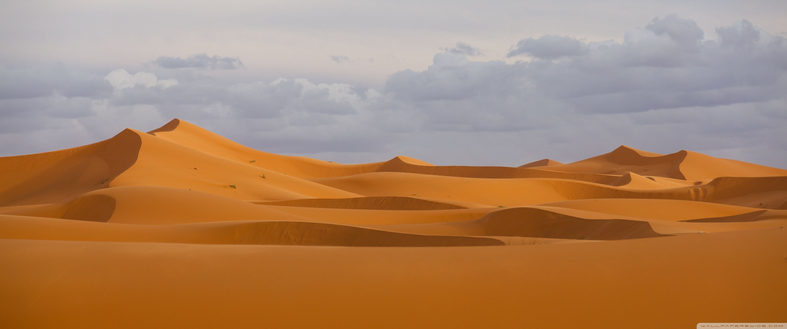

The most spectacular feature is the marble dome that surmounts the tomb. The dome is nearly 35 metres (115 ft) high which is close in measurement to the length of the base, and accentuated by the cylindrical "drum" it sits on, which is approximately 7 metres (23 ft) high. Because of its shape, the dome is often called an onion dome or amrud (guava dome).[18] The top is decorated with a lotus design which also serves to accentuate its height. The shape of the dome is emphasised by four smaller domed chattris (kiosks) placed at its corners, which replicate the onion shape of the main dome. The dome is slightly asymmetrical.[19] Their columned bases open through the roof of the tomb and provide light to the interior. Tall decorative spires (guldastas) extend from edges of base walls, and provide visual emphasis to the height of the dome. The lotus motif is repeated on both the chattris and guldastas. The dome and chattris are topped by a gilded finial which mixes traditional Persian and Hindustani decorative elements.[20]
The main finial was originally made of gold but was replaced by a copy made of gilded bronze in the early 19th century. This feature provides a clear example of integration of traditional Persian and Hindu decorative elements.[21] The finial is topped by a moon, a typical Islamic motif whose horns point heavenward.[22]
The minarets, which are each more than 40 metres (130 ft) tall, display the designer's penchant for symmetry. They were designed as working minarets— a traditional element of mosques, used by the muezzin to call the Islamic faithful to prayer. Each minaret is effectively divided into three equal parts by two working balconies that ring the tower. At the top of the tower is a final balcony surmounted by a chattri that mirrors the design of those on the tomb. The chattris all share the same decorative elements of a lotus design topped by a gilded finial. The minarets were constructed slightly outside of the plinth so that in the event of collapse, a typical occurrence with many tall constructions of the period, the material from the towers would tend to fall away from the tomb.
Msyore palace
Mysore is located in the foothills of the Chamundi Hills about 145.2 km (90 mi) towards the southwest of Bangalore and spread across an area of 286.05 km2 (110 sq mi). Mysore City Corporation is responsible for the civic administration of the city, which is also the headquarters of the Mysore district and the Mysore division. In November 2020, A gazetted notification was passed by the state government converting nearby census town of Hootagalli into a City Municipal Council along with four more Town Panchayats of Bhogadi, Kadakola, Rammanahalli and Srirampura, expanding the city area from 155.7 sq.km to 286.05 sq.km.[16][17] This also increased the population of the urban agglomeration from 990,900 to 1,060,120.[16][17][18][19][20][21][22] According to United Nations, Mysuru is projected to have a population of 1.162 million in 2018, making it the second largest city in the state.[23]
It served as the capital city of the Kingdom of Mysore for nearly six centuries from 1399 until 1956. The Kingdom was ruled by the Wadiyar dynasty, with a brief period of interregnum in the late 18th century when Hyder Ali and Tipu Sultan were in power. The Wadiyars were patrons of art and culture. Tipu Sultan and Hyder Ali also contributed significantly to the cultural and economic growth of the city and the state by planting mulberry trees introducing silk in the region and fighting 4 Anglo-Mysore wars against the British. The cultural ambience and achievements of Mysore earned it the sobriquet Cultural Capital of Karnataka.
Mysore is noted for its heritage structures and palaces, including the Mysore Palace, and for the festivities that take place during the Dasara festival when the city receives many tourists from around the world. It lends its name to various art forms and culture, such as Mysore Dasara, Mysore painting; the sweet dish Mysore Pak, Mysore Masala Dosa; brands such as Mysore Sandal Soap, Mysore Ink; and styles and cosmetics such as Mysore Peta (a traditional silk turban) and the Mysore silk saris. Mysore is also known for its special variety of jasmine flower fondly referred as "Mysore Mallige" and betel leaves. Tourism is the major industry alongside the traditional industries. Mysore's inter-city public transportation includes rail, bus and flights
Tirpuati (lod of govindraulu)
The first temple at Tirumala Tirupati was built by King Thondaiman, Tamil ruler of the ancient Thondaimandalam. He is said to have built the original Gopuram (tower) and the Prakhara in the 8th century. The city became great Vaishnava centre during the time of Ramanujacharya in 11th century, from where Srivaishnavism spread to other parts of Andhra Desa. Srikurmam Temple in Srikakulam district of Andhra Pradesh bears the inscription saying Tirupati Srivaishnavula Raksha.[16] Tirupati survived the Muslim invasions by accepting to pay Jizya to the Muslims. During the early 1300s Muslim invasion of South India, the deity of Sri Ranganathaswamy Temple, Srirangam was brought to Tirupati for safekeeping.[citation needed]
The temple town for most of the medieval era part of Vijayanagara Empire until the 17th century and its rulers contributed considerable resources and wealth notable by Krishna Deva Raya and Achyuta Deva Raya, Sadasiva Raya and Tirumala Deva Raya.
The city has many historical temples including the Venkateswara Temple which bears 1,150 inscriptions in Sanskrit, Tamil, Telugu and Kannada languages.[17] Out of 1150 inscriptions 236 belong to Pallava, Chola and Pandya dynasties, 169 belonged to Saluva dynasty, 251 belonged to Achyuta Deva Raya period, 130 belonged to Sadasiva Raya period and another 135 originated in Aravidu dynasty.[17][18] which specify the contributions of the Pallava Kingdom around the 9th century AD, Chola Kingdom around the 10th century AD and the Vijayanagara Empire in the 14th century AD.[19] During the 15th century, Sri Tallapaka Annamacharya sung many songs in praise of the holy town in Telugu. He compared it to be divine, including the rocks, streams, trees, animals, and adds that it is heaven on the earth. One example of such a song is:[20]

Charminar
Charminar (lit "four minarets") constructed in 1591, is a monument and mosque located in Hyderabad, Telangana, India. The landmark has become known globally as a symbol of Hyderabad and is listed among the most recognised structures in India. It has also been officially incorporated as the Emblem of Telangana for the state of Telangana.[3] The Charminar's long history includes the existence of a mosque on its top floor for more than 400 years. While both historically and religiously significant, it is also known for its popular and busy local markets surrounding the structure, and has become one of the most frequented tourist attractions in Hyderabad. Charminar is also a site of numerous festival celebrations, such as Eid-ul-adha and Eid al-Fitr.[4]
The Charminar is situated on the east bank of Musi river.[5] To the west lies the Laad Bazaar, and to the southwest lies the richly ornamented granite Makkah Masjid.[6] It is listed as an archaeological and architectural treasure on the official "List of Monuments" prepared by the Archaeological Survey of India.[7] The English name is a translation and combination of the Urdu words chār and minar or meenar, translating to "Four Pillars"; the eponymous towers are ornate minarets attached and supported by four grand arches

Desert
A desert is a barren area of landscape where little precipitation occurs and, consequently, living conditions are hostile for plant and animal life. The lack of vegetation exposes the unprotected surface of the ground to the processes of denudation. About one-third of the land surface of the world is arid or semi-arid. This includes much of the polar regions, where little precipitation occurs, and which are sometimes called polar deserts or "cold deserts". Deserts can be classified by the amount of precipitation that falls, by the temperature that prevails, by the causes of desertification or by their geographical location.
Deserts are formed by weathering processes as large variations in temperature between day and night put strains on the rocks, which consequently break in pieces. Although rain seldom occurs in deserts, there are occasional downpours that can result in flash floods. Rain falling on hot rocks can cause them to shatter, and the resulting fragments and rubble strewn over the desert floor are further eroded by the wind. This picks up particles of sand and dust and wafts them aloft in sand or dust storms. Wind-blown sand grains striking any solid object in their path can abrade the surface. Rocks are smoothed down, and the wind sorts sand into uniform deposits. The grains end up as level sheets of sand or are piled high in billowing sand dunes. Other deserts are flat, stony plains where all the fine material has been blown away and the surface consists of a mosaic of smooth stones. These areas are known as desert pavements, and little further erosion takes place. Other desert features include rock outcrops, exposed bedrock and clays once deposited by flowing water. Temporary lakes may form and salt pans may be left when waters evaporate. There may be underground sources of water, in the form of springs and seepages from aquifers. Where these are found, oases can occur.
Redfort
Constructed in 1639 by the fifth Mughal Emperor Shah Jahan as the palace of his fortified capital Shahjahanabad, the Red Fort is named for its massive enclosing walls of red sandstone. The imperial apartments consist of a row of pavilions, connected by a water channel known as the Stream of Paradise (Nahr-i-Bihisht). The fort complex is "considered to represent the zenith of Mughal creativity under Shah Jahan",[7] and although the palace was planned according to Islamic prototypes, each pavilion contains architectural elements typical of Mughal buildings that reflect a fusion of Persian, Timurid and Indian traditions.[8] The Red Fort's innovative architectural style, including its garden design, influenced later buildings and gardens in Delhi, Rajasthan, Punjab, Kashmir, Braj, Rohilkhand and elsewhere.[9]
The fort was plundered of its artwork and jewels during Nadir Shah's invasion of the Mughal Empire in 1739. Most of the fort's precious marble structures were subsequently destroyed by the British following the Revolt of 1857.[10] The fort's defensive walls were largely spared, and the fortress was subsequently used as a garrison.[10] It was designated a UNESCO World Heritage Site in 2007 as part of the Red Fort Complex.[9][11]
Emperor Shah Jahan commissioned construction of the Red Fort on 12 May 1638, when he decided to shift his capital from Agra to Delhi. Originally red and white, Shah Jahan's favourite colours,[12] its design is credited to architect Ustad Ahmad Lahori, who also constructed the Taj Mahal.[13][14] The fort lies along the Yamuna River, which fed the moats surrounding most of the walls.[15] Construction began in the sacred Islamic month of Muharram, on 13 May 1638.[16]:01 Supervised by Shah Jahan, it was completed on 6 April 1648.[17][18][19] Unlike other Mughal forts, the Red Fort's boundary walls are asymmetrical to contain the older Salimgarh Fort.[16]:04 The fortress-palace was a focal point of the city of Shahjahanabad, which is present-day Old Delhi. Shah Jahan's successor, Aurangzeb, added the Moti Masjid (Pearl Mosque) to the emperor's private quarters, constructing barbicans in front of the two main gates to make the entrance to the palace more circuitous.[16]:08
The administrative and fiscal structure of the Mughal dynasty declined after Aurangzeb, and the 18th century saw a degeneration of the palace. In 1712 Jahandar Shah became the Mughal Emperor. Within a year of beginning his rule, Shah was murdered and replaced by Farrukhsiyar. Muhammad Shah, known as 'Rangila' (the Colourful) for his interest in art. In 1739, Persian emperor Nadir Shah easily defeated the strong Mughal army of around 200,000 soldiers[20], plundering the Red Fort, including the Peacock Throne. Nadir Shah returned to Persia after three months, leaving a destroyed city and a weakened Mughal empire to Muhammad Shah.[16]:09 The internal weakness of the Mughal Empire made the Mughals only titular rulers of Delhi, and a 1752 treaty made the Marathas protectors of the throne at Delhi.[21][22] The 1758 Maratha victory at Sirhind aided by the Sikhs and successive defeat at Panipat[23] placed them in further conflict with Ahmad Shah Durrani.[24][25]